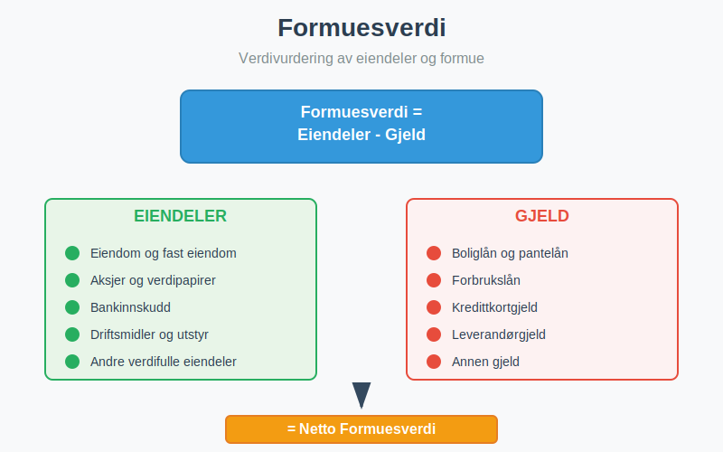
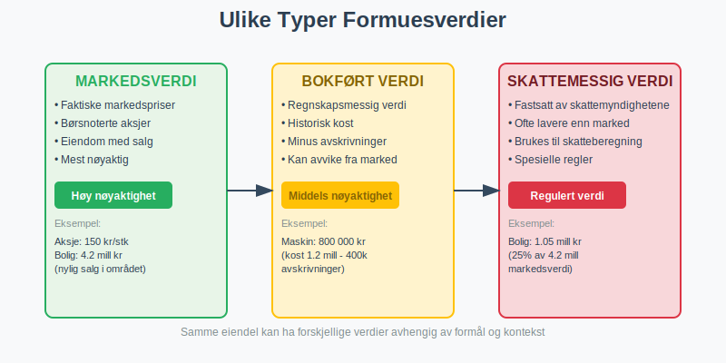
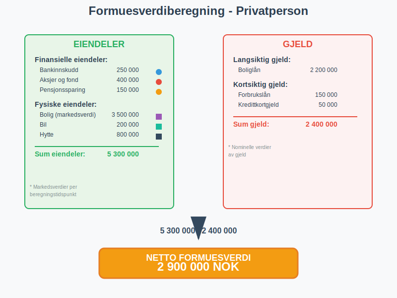
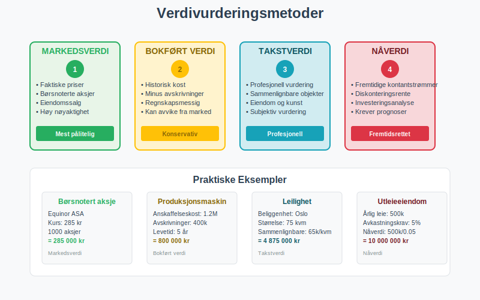
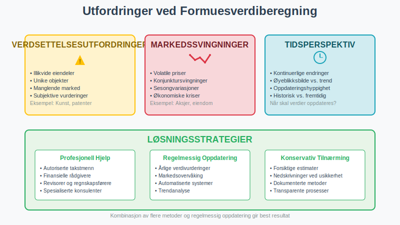

Formuesverdi er den totale verdien av en persons eller bedrifts eiendeler fratrukket gjeld. Det representerer netto formue og er et sentralt begrep innen regnskap, skatteberegning og økonomisk analyse. Formuesverdi brukes både for private personer og bedrifter til å vurdere økonomisk stilling og soliditet.

Definisjon og Grunnleggende Forståelse
Formuesverdi kan defineres på flere måter avhengig av kontekst og formål:
Regnskapsmessig Definisjon
Formuesverdi = Eiendeler - Gjeld
Dette er den mest grunnleggende formelen som viser at formuesverdi er det som blir igjen når alle forpliktelser er trukket fra alle eiendeler (aktiva).
Skattemessig Definisjon
For skatteformål beregnes formuesverdi basert på skattemessige verdier av eiendeler og gjeld, som kan avvike fra markedsverdier eller regnskapsmessige verdier. Dette kalles også ligningsverdi.
Markedsmessig Definisjon
Markedsmessig formuesverdi baseres på faktiske markedsverdier av eiendeler på beregningstidspunktet, noe som gir det mest realistiske bildet av faktisk formue.

Komponenter i Formuesverdi
Formuesverdi består av to hovedkomponenter som må vurderes nøye:
1. Eiendeler (Aktiva)
Eiendeler som inngår i formuesverdiberegning inkluderer:
Finansielle Eiendeler:
- Bankinnskudd og kontanter
- Aksjer og verdipapirer
- Obligasjoner og rentebærende verdipapirer
- Fond og investeringskontoer
- Pensjonsmidler og livsforsikring
Fysiske Eiendeler:
- Fast eiendom (boliger, næringseiendom, tomter)
- Driftsmidler og maskiner
- Inventar og utstyr
- Kjøretøy og transportmidler
- Kunst og samleobjekter
Immaterielle Eiendeler:
- Patenter og opphavsrettigheter
- Varemerker og goodwill
- Programvare og teknologi
- Kunderegistre og kontrakter
2. Gjeld (Passiva)
Gjeld som trekkes fra i formuesverdiberegning:
Langsiktig Gjeld:
- Boliglån og pantelån
- Næringslån og investeringslån
- Obligasjonslån og sertifikatlån
Kortsiktig Gjeld:
- Forbrukslån og kredittkortgjeld
- Leverandørgjeld og fakturaer
- Skattegjeld og avgiftsgjeld
- Annen kortsiktig gjeld
Beregning av Formuesverdi
La oss se på praktiske eksempler på hvordan formuesverdi beregnes:
Eksempel 1: Privatperson
| Eiendeler | Verdi (NOK) |
|---|---|
| Finansielle Eiendeler | |
| Bankinnskudd | 250 000 |
| Aksjer og fond | 400 000 |
| Pensjonssparing | 150 000 |
| Fysiske Eiendeler | |
| Bolig (markedsverdi) | 3 500 000 |
| Bil | 200 000 |
| Hytte | 800 000 |
| Sum eiendeler | 5 300 000 |
| Gjeld | Beløp (NOK) |
| Boliglån | 2 200 000 |
| Forbrukslån | 150 000 |
| Kredittkortgjeld | 50 000 |
| Sum gjeld | 2 400 000 |
| Netto formuesverdi | 2 900 000 |
Beregning: 5 300 000 - 2 400 000 = 2 900 000 NOK

Eksempel 2: Bedrift
| Eiendeler | Verdi (NOK) |
|---|---|
| Omløpsmidler | |
| Kontanter og bank | 500 000 |
| Kundefordringer | 800 000 |
| Varelager | 600 000 |
| Anleggsmidler | |
| Bygninger | 2 000 000 |
| Maskiner og utstyr | 1 200 000 |
| Goodwill | 300 000 |
| Sum eiendeler | 5 400 000 |
| Gjeld | Beløp (NOK) |
| Leverandørgjeld | 400 000 |
| Banklån | 1 500 000 |
| Annen gjeld | 200 000 |
| Sum gjeld | 2 100 000 |
| Netto formuesverdi | 3 300 000 |
Verdivurderingsmetoder
Ulike eiendeler krever forskjellige metoder for verdivurdering:
1. Markedsverdi
- Basert på faktiske markedspriser
- Brukes for børsnoterte aksjer, eiendom med sammenlignbare salg
- Mest nøyaktig, men ikke alltid tilgjengelig
2. Bokført Verdi
- Verdi i regnskapet
- Historisk kost minus avskrivninger
- Kan avvike betydelig fra markedsverdi
3. Takstverdi
- Profesjonell vurdering av kvalifisert takstmann
- Brukes for eiendom, kunst, spesialutstyr
- Basert på sammenlignbare objekter og markedsforhold
4. Nåverdi
- Beregnet basert på fremtidige kontantstrømmer
- Brukes for investeringer og forretningsvirksomhet
- Krever antagelser om fremtidig avkastning

Formuesverdi og Skatt
I Norge har formuesverdi betydning for flere skattemessige forhold:
Formueskatt (Opphevet 2014)
- Norge hadde tidligere formueskatt basert på netto formuesverdi
- Ble opphevet fra 2015, men prinsippene er fortsatt relevante
Skattemessige Verdier
| Eiendelstype | Skattemessig Verdi |
|---|---|
| Bolig | 25% av markedsverdi |
| Fritidseiendom | 25% av markedsverdi |
| Næringseiendom | Markedsverdi |
| Aksjer | Markedsverdi (børsnoterte) |
| Bankinnskudd | Nominell verdi |
| Gjeld | Nominell verdi |
Arveavgift og Gaveavgift
- Baseres på markedsverdi av overførte eiendeler
- Viktig for planlegging av generasjonsskifte
Formuesverdi i Bedriftssammenheng
For bedrifter er formuesverdi sentralt i flere sammenhenger:
1. Egenkapitalvurdering
Formuesverdi tilsvarer egenkapital i regnskapet:
- Egenkapital = Eiendeler - Gjeld
- Viser eiernes netto investering i bedriften
2. Soliditetsvurdering
Egenkapitalandel beregnes som:
- Egenkapitalandel = (Egenkapital / Sum eiendeler) × 100%
| Egenkapitalandel | Soliditetsvurdering |
|---|---|
| Over 40% | Meget god soliditet |
| 30-40% | God soliditet |
| 20-30% | Middels soliditet |
| 10-20% | Svak soliditet |
| Under 10% | Kritisk lav soliditet |
3. Verdivurdering av Selskap
- Bokført verdi vs. markedsverdi
- Viktig ved salg, fusjon eller oppkjøp (hvor goodwill ofte oppstår)
- Grunnlag for aksjevurdering
Utfordringer ved Formuesverdiberegning
1. Verdsettelsesutfordringer
- Illikvide eiendeler kan være vanskelige å verdsette
- Markedssvingninger påvirker verdier
- Subjektive vurderinger for unike eiendeler
2. Tidsperspektiv
- Formuesverdi endres kontinuerlig
- Øyeblikksbilde vs. trendanalyse
- Viktighet av regelmessig oppdatering
3. Regnskapsmessige Utfordringer
- Forskjell mellom bokført verdi og markedsverdi
- Avskrivninger kan undervurdere eiendeler
- Goodwill og immaterielle eiendeler

Praktisk Anvendelse
For Privatpersoner
- Økonomisk planlegging og budsjettring
- Pensjonssparing og investeringsstrategi
- Lånesøknader og kredittvurdering
- Forsikringsbehov og risikovurdering
For Bedrifter
- Finansiell rapportering og regnskap
- Kredittvurdering og låneopptak
- Investeringsbeslutninger og kapitalallokering
- Strategisk planlegging og verdiskapning
For Investorer
- Fundamental analyse av selskaper
- Porteføljeevaluering og risikostyring
- Sammenligning av investeringsalternativer
Formuesverdi og Inflasjon
Inflasjon påvirker formuesverdi på flere måter:
Nominell vs. Real Formuesverdi
- Nominell formuesverdi: Ikke justert for inflasjon
- Real formuesverdi: Justert for kjøpekraftsendringer
Inflasjonsbeskyttelse
Ulike eiendeler gir forskjellig beskyttelse mot inflasjon:
| Eiendelstype | Inflasjonsbeskyttelse |
|---|---|
| Fast eiendom | God beskyttelse |
| Aksjer | Varierende beskyttelse |
| Obligasjoner | Begrenset beskyttelse |
| Kontanter | Ingen beskyttelse |
| Realaktiva | God beskyttelse |
Internasjonale Perspektiver
IFRS og Regnskapsstandarder
- International Financial Reporting Standards
- Harmonisering av verdivurderingsprinsipper
- Fair value vs. historical cost
Skattemessige Forskjeller
Ulike land har forskjellige regler for:
- Formueskatt og kapitalbeskatning
- Verdivurderingsmetoder for skatteformål
- Rapporteringskrav for formue
Digitalisering og Formuesverdi
Nye Eiendelstyper
- Kryptovaluta og digitale eiendeler
- NFT og digitale samleobjekter
- Immaterielle rettigheter i digital økonomi
Teknologiske Verktøy
- Automatisert verdivurdering og prisoppdatering
- Porteføljestyring og rapportering
- Kunstig intelligens i verdivurdering
Juridiske Aspekter
Kontraktsrett
- Pantsettelse og sikkerhetsstillelse
- Ekteskapelige forhold og formuesfordeling
- Arverett og testamentariske disposisjoner
Selskapsrett
- Kapitalforhøyninger og emisjoner
- Fusjon og fisjon av selskaper
- Oppløsning og avvikling
Risikostyring og Formuesverdi
Diversifisering
- Spredning av risiko på ulike eiendelsklasser
- Geografisk diversifisering
- Sektordiversifisering
Forsikring
- Eiendomsforsikring og ansvarsforsikring
- Livsforsikring og uføreforsikring
- Nøkkelpersonforsikring for bedrifter
Konklusjon
Formuesverdi er et fundamentalt begrep som har stor betydning både for privatpersoner og bedrifter. Forståelse av hvordan formuesverdi beregnes og vurderes er essensielt for:
- Økonomisk planlegging og beslutninger
- Skattemessige forhold og rapportering
- Investeringsstrategier og risikostyring
- Kredittvurdering og finansiering
Ved beregning av formuesverdi er det viktig å:
- Identifisere alle relevante eiendeler og gjeld
- Velge riktige verdivurderingsmetoder for hver eiendelstype
- Oppdatere verdier regelmessig for å reflektere markedsendringer
- Forstå skattemessige konsekvenser av ulike verdivurderinger
- Vurdere risiko og diversifisering i formuessammensetningen
Formuesverdi er ikke bare et øyeblikksbilde, men et dynamisk mål som endres med markedsforhold, økonomisk utvikling og personlige eller bedriftsmessige beslutninger. Regelmessig overvåking og analyse av formuesverdi er derfor avgjørende for god økonomisk styring og planlegging.